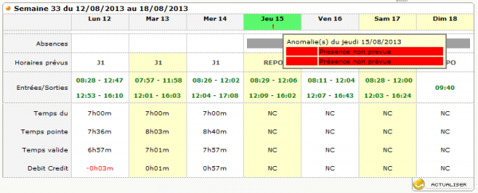

HTML Scraping or Surviving Orrible Corporate Tools
At work I have to fill my weekly timesheet. We use Planisware’s Timecard to record time spent on the various projects we are assigned to work on.
So you need to known what the total working time is for the day. For that our badging in and out is recorded and passed to Chronogestor which does sums them up and provides both a sexagesimal and decimal format.
When there is an anomaly the sums are blocked till the request you submitted to fix it is implemented… So I thought I could do some web scraping and extract my clockings from the relevant CG’s page, make the total for the day (in decimal form: in Timecard we record time in decimal form, i.e. 3.5 is 3 hours and 30 minutes.) and fill Timecard.
HTML Scraping to the rescue
Let’s take the page for the weekly clockings (in case of anomalies the rows like “Temps pointe” / “Temps valide” are empty):

I initially tried with some Python examples using lxml but got stuck. CG complaines if you are using Google Chrome (and the tools above use Webkit, the web browser engine, behind the scene).
Also I soon realized CG does a lot of rendering via Javascript while I initially assumed it would have been a simple HTML page with a static table for the clockings. (This would have been to simple to implement! What a mess!)
I decided to go for SlimerJS the scriptable browser that runs on top of Gecko, the web engine of Mozilla Firefox. (PhantomJS is the equivalent for Blink/WebKit used in Google Chrome.)
Nothing strange about using Javascript of course but CG sucks at it: it is a last millenium tool which has been hastily brought to this century without any knowledge of the web technologies (and any taste for usability and beauty.) Just check the generated DOM elements and you will see that the uniqueness (within a page) of id is not at all respected.
From the page for the weekly clockings shown above, using Firefox Developer Tools you can see that the table for the clockings (“Entrées/Sorties” row) can be selected via the following CSS path (line 58):
Run it!
The scraping is run as follows:
C:\goodies\cg>cg usr:pwd 03/02/2015Where usr is the userid and pwd is the password for both the internet proxy and ChronoGestor.
cg is a simple (stupid?) .bat script
Loggin in
The relevant lines from the cg.js script 6-16,47,54,61-63 (see the code above.)
Here we reuse the proxy user and account values which, as per company policy, are the same as our login name and password. And to do that I had to hack an implementation detail whereby slimer.js sets an environment variable __SLIMER_ARGS with the options passed on the command line. (Lines 6-16)
Extract the clockings
In order to extract the right cells for the clocking, I inject JQuery and use webpage.evaluate() function from the API in order to execute extractClockings (sel will be passed as argument to extractClockings, it is the CSS path shown above). Lines 74-76.
extractClockings reads a list of <a> elements for each day. Lines 18-42.
Count the minutes
The rest is a matter of summing up the minutes and printing the values. Lines 78-114.